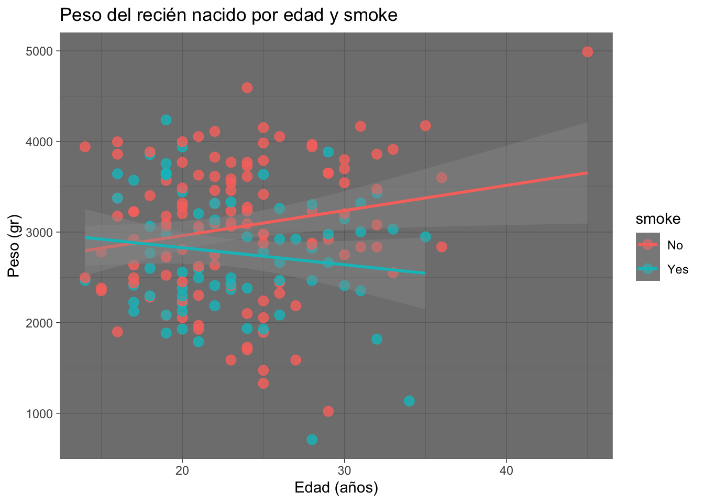
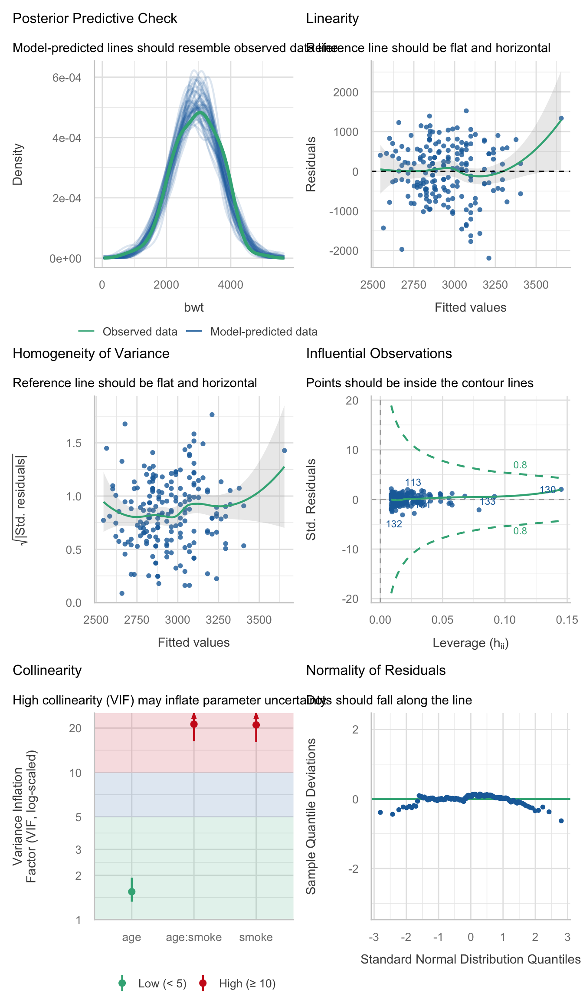
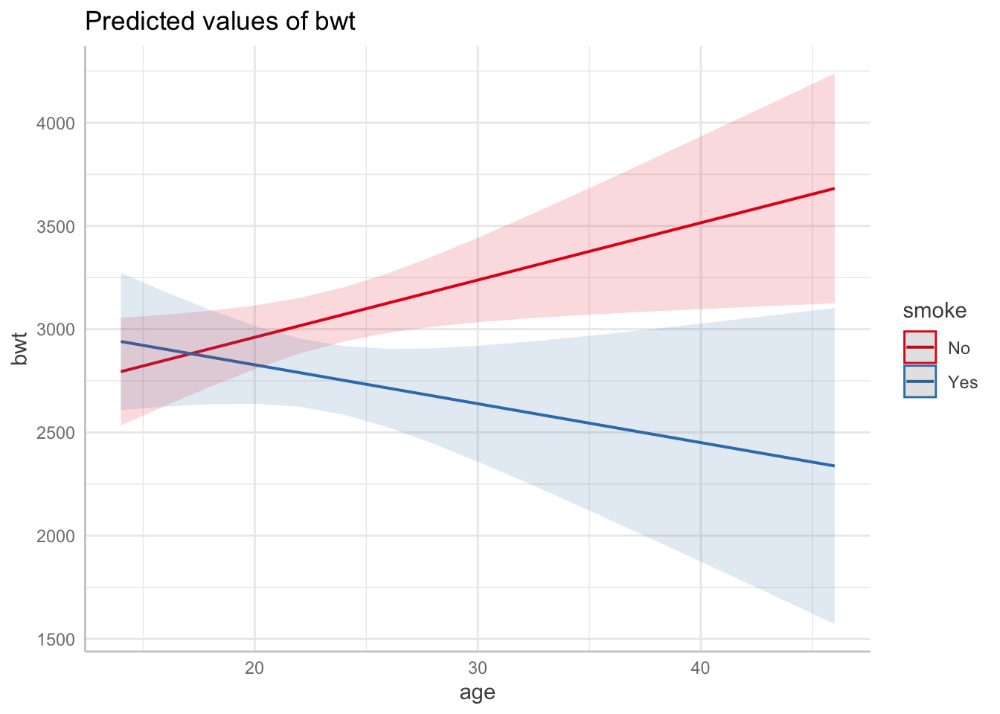
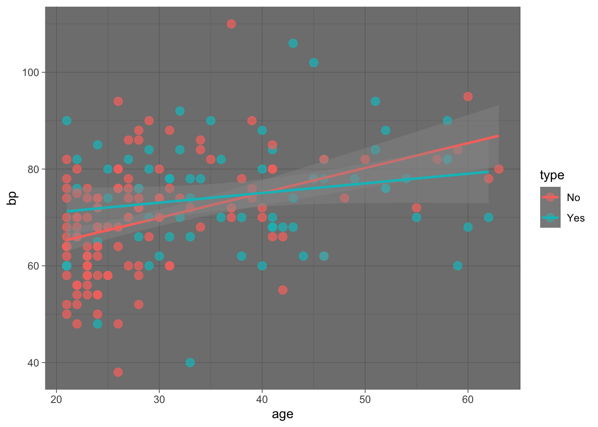
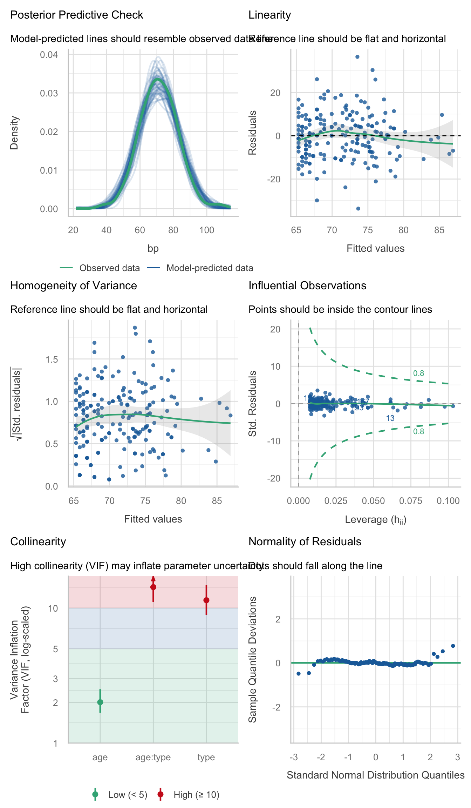
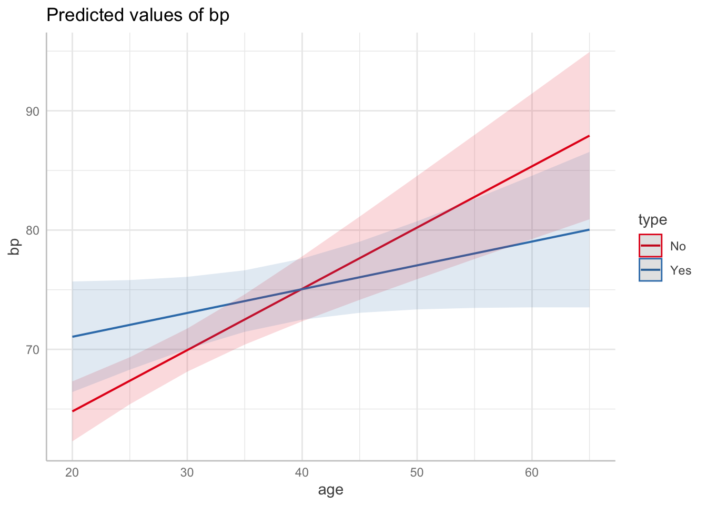

library(MASS)
library(performance)
library(tidyverse)Resolucion ejercicios interacciones
Este documento tiene la interpretacion y resolución de los ejercicios de regresión lineal múltiple con variables con una variables caulitativa y una cuantitiva Presentacion
Birthwt
¿El efecto de la edad sobre el peso de los recien nacidos depende de si la madre fumo en el embarazo?
data("birthwt")
df <- birthwt |>
select(bwt, age, smoke) |>
mutate(smoke = factor(smoke, levels = c(0,1), labels = c("No", "Yes")))Hipótesis a priori: ¿hay razón biológica para que Z modifique el efecto de X?
Si, el fumar y la edad se relacionan con el peso del recien nacido.
Explorar: gráfico de dispersión por estratos / líneas de regresión por grupo.
df |>
ggplot(aes(x = age, y = bwt, colour = smoke))+
geom_point(alpha = 0.8, size = 3)+
geom_smooth(method = 'lm', se = T) +
theme_dark()+
labs(title = 'Peso del recién nacido por edad y smoke',
y="Peso (gr)", x ='Edad (años)')`geom_smooth()` using formula = 'y ~ x'
Ajustar el modelo sin y con interacción: y ~ x + z vs y ~ x * z.
mod_sin <- lm(bwt~age+smoke, data = df) # No interacción
mod_con <- lm(bwt~age*smoke, data = df) # InteracciónPodemos comparar los modelos con:
anova(mod_sin, mod_con)Analysis of Variance Table
Model 1: bwt ~ age + smoke
Model 2: bwt ~ age * smoke
Res.Df RSS Df Sum of Sq F Pr(>F)
1 186 95672288
2 185 93062605 1 2609683 5.1878 0.02389 *
---
Signif. codes: 0 '***' 0.001 '**' 0.01 '*' 0.05 '.' 0.1 ' ' 1summary(mod_sin)
Call:
lm(formula = bwt ~ age + smoke, data = df)
Residuals:
Min 1Q Median 3Q Max
-2119.98 -442.66 52.92 532.38 1690.74
Coefficients:
Estimate Std. Error t value Pr(>|t|)
(Intercept) 2791.224 240.950 11.584 <2e-16 ***
age 11.290 9.881 1.143 0.255
smokeYes -278.356 106.987 -2.602 0.010 *
---
Signif. codes: 0 '***' 0.001 '**' 0.01 '*' 0.05 '.' 0.1 ' ' 1
Residual standard error: 717.2 on 186 degrees of freedom
Multiple R-squared: 0.04299, Adjusted R-squared: 0.0327
F-statistic: 4.177 on 2 and 186 DF, p-value: 0.0168performance(mod_sin)# Indices of model performance
AIC | AICc | BIC | R2 | R2 (adj.) | RMSE | Sigma
----------------------------------------------------------------
3026.8 | 3027.0 | 3039.8 | 0.043 | 0.033 | 711.479 | 717.194| Characteristic | Beta | 95% CI | p-value |
|---|---|---|---|
| age | 11 | -8.2, 31 | 0.3 |
| smoke | |||
| No | — | — | |
| Yes | -278 | -489, -67 | 0.010 |
| Abbreviation: CI = Confidence Interval | |||
summary(mod_sin)
Call:
lm(formula = bwt ~ age + smoke, data = df)
Residuals:
Min 1Q Median 3Q Max
-2119.98 -442.66 52.92 532.38 1690.74
Coefficients:
Estimate Std. Error t value Pr(>|t|)
(Intercept) 2791.224 240.950 11.584 <2e-16 ***
age 11.290 9.881 1.143 0.255
smokeYes -278.356 106.987 -2.602 0.010 *
---
Signif. codes: 0 '***' 0.001 '**' 0.01 '*' 0.05 '.' 0.1 ' ' 1
Residual standard error: 717.2 on 186 degrees of freedom
Multiple R-squared: 0.04299, Adjusted R-squared: 0.0327
F-statistic: 4.177 on 2 and 186 DF, p-value: 0.0168performance(mod_sin)# Indices of model performance
AIC | AICc | BIC | R2 | R2 (adj.) | RMSE | Sigma
----------------------------------------------------------------
3026.8 | 3027.0 | 3039.8 | 0.043 | 0.033 | 711.479 | 717.194| Characteristic | Beta | 95% CI | p-value |
|---|---|---|---|
| age | 28 | 3.8, 52 | 0.024 |
| smoke | |||
| No | — | — | |
| Yes | 798 | -157, 1,754 | 0.10 |
| age * smoke | |||
| age * Yes | -47 | -87, -6.2 | 0.024 |
| Abbreviation: CI = Confidence Interval | |||
Diagnóstico del modelo final (residuales, homocedasticidad, influencia).
check_model(mod_con)
Interpretar y graficar efectos condicionales (pendientes simples).
library(ggeffects)Warning: package 'ggeffects' was built under R version 4.5.2pred <- ggpredict(
mod_con,
terms = c("age", "smoke")
)
plot(pred)
Interpretación
| Coeficiente | Valor | Significado correcto |
|---|---|---|
| Intercepto | 2406 | Peso esperado en no fumadora de 0 años (sin sentido) |
age |
27.7 | Pendiente de la edad en no fumadoras |
smoke_fFuma |
798.2 | Diferencia Fuma − No fuma a los 0 años (¡no es “fumar aumenta el peso”!) |
age:smoke_fFuma |
−46.6 | Diferencia de pendientes (Fuma − No fuma) |
Pendiente en fumadoras = \(27.7 + (-46.6) = -18.8\) g por año.
¿Cómo se interpreta la interacción?
El coeficiente de interacción representa la diferencia entre las pendientes de edad para fumadoras y no fumadoras.
- Pendiente de edad para las madres que no fuman (
smoke = 0):
\[ \widehat{bwt} = 2406.1 + 27.7(age) + 798.2(0) - 46.6(0 \times age) \]
Se utiliza smoke = 0 porque las no fumadoras son el grupo de referencia.
Simplificando:
\[ \widehat{bwt}=2406.1+27.7(age) \]
Por lo tanto:
\[ \boxed{\text{Pendiente}_{No\ fuma}=+27.7\text{ g/año}} \]
Por cada año adicional de edad materna, el peso esperado al nacer aumenta 27.7 g entre las madres no fumadoras.
- Pendiente de edad para las madres que fuman (
smoke = 1):
\[ \widehat{bwt} =2406.1+798.2(1)+27.7(age)-46.6(1\times age) \]
Simplificando:
\[ \widehat{bwt} =(2406.1+798.2)+(27.7-46.6)(age) \]
\[ \widehat{bwt}=3204.3-18.9(age) \]
Por lo tanto:
\[ \boxed{\text{Pendiente}_{Fuma}=-18.9\text{ g/año}} \]
Por cada año adicional de edad materna, el peso esperado al nacer disminuye aproximadamente 18.9 g entre las madres fumadoras.
¿Qué representa entonces la interacción?
La interacción es la diferencia entre ambas pendientes:
\[ \beta_{smoke:age} = \text{Pendiente}_{Fuma} - \text{Pendiente}_{No\ fuma} \]
\[ =-18.9-(27.7) \]
\[ \boxed{\beta_{smoke:age}=-46.6\text{ g/año}} \]
Por cada año adicional de edad materna, la pendiente de bwt es 46.6 g/año menor en fumadoras que en no fumadoras.
Los interceptos no se toma en cuenta para calcular ni comparar las pendientes. Esto ocurre porque el intercepto determina la altura de la recta, mientras que nosotros estamos interesados en su inclinación.
Centrar variables para que todo tenga sentido
df$age_c <- birthwt$age - mean(birthwt$age) # media = 23.2 años
m_cen <- lm(bwt ~ age_c * smoke, data = df) # Modelo con la edad centrada
round(summary(m_cen)$coefficients, 3) Estimate Std. Error t value Pr(>|t|)
(Intercept) 3050.482 66.178 46.095 0.000
age_c 27.731 12.149 2.283 0.024
smokeYes -284.068 105.832 -2.684 0.008
age_c:smokeYes -46.572 20.447 -2.278 0.024Ahora para las madres que fumaron= -284 g diferencias por tabaquismo a la edad promedio de 23 años
Pima.tr
¿Qué efecto tiene la edad sobre la TA cuando se toma en cuenta si la paciente tiene diabetes o no?
data(Pima.tr, package = "MASS") # bp = presión diastólica; type = diabetes (No/Yes)Pima.tr |>
ggplot(mapping = aes(x=age, y = bp, colour = type))+
geom_point(alpha = 0.7, size = 3)+
geom_smooth(method = 'lm', se = T)+
theme_dark()`geom_smooth()` using formula = 'y ~ x'
mod_sin <- lm(bp ~ age + type, data = Pima.tr)
mod_con<- lm(bp ~ age * type, data = Pima.tr)anova(mod_sin, mod_con)Analysis of Variance Table
Model 1: bp ~ age + type
Model 2: bp ~ age * type
Res.Df RSS Df Sum of Sq F Pr(>F)
1 197 22084
2 196 21583 1 500.69 4.5468 0.03422 *
---
Signif. codes: 0 '***' 0.001 '**' 0.01 '*' 0.05 '.' 0.1 ' ' 1Podemos comparar los modelos con:
anova(mod_sin, mod_con)Analysis of Variance Table
Model 1: bp ~ age + type
Model 2: bp ~ age * type
Res.Df RSS Df Sum of Sq F Pr(>F)
1 197 22084
2 196 21583 1 500.69 4.5468 0.03422 *
---
Signif. codes: 0 '***' 0.001 '**' 0.01 '*' 0.05 '.' 0.1 ' ' 1summary(mod_sin)
Call:
lm(formula = bp ~ age + type, data = Pima.tr)
Residuals:
Min 1Q Median 3Q Max
-32.805 -7.176 -0.307 6.173 37.503
Coefficients:
Estimate Std. Error t value Pr(>|t|)
(Intercept) 58.43368 2.33749 24.998 < 2e-16 ***
age 0.38009 0.07348 5.173 5.66e-07 ***
typeYes 1.82865 1.69820 1.077 0.283
---
Signif. codes: 0 '***' 0.001 '**' 0.01 '*' 0.05 '.' 0.1 ' ' 1
Residual standard error: 10.59 on 197 degrees of freedom
Multiple R-squared: 0.1579, Adjusted R-squared: 0.1493
F-statistic: 18.47 on 2 and 197 DF, p-value: 4.452e-08performance(mod_sin)# Indices of model performance
AIC | AICc | BIC | R2 | R2 (adj.) | RMSE | Sigma
--------------------------------------------------------------
1516.4 | 1516.6 | 1529.6 | 0.158 | 0.149 | 10.508 | 10.588| Characteristic | Beta | 95% CI | p-value |
|---|---|---|---|
| age | 0.38 | 0.24, 0.52 | <0.001 |
| type | |||
| No | — | — | |
| Yes | 1.8 | -1.5, 5.2 | 0.3 |
| Abbreviation: CI = Confidence Interval | |||
summary(mod_con)
Call:
lm(formula = bp ~ age * type, data = Pima.tr)
Residuals:
Min 1Q Median 3Q Max
-33.652 -7.268 0.171 6.004 36.466
Coefficients:
Estimate Std. Error t value Pr(>|t|)
(Intercept) 54.52808 2.95331 18.463 < 2e-16 ***
age 0.51368 0.09607 5.347 2.47e-07 ***
typeYes 12.53792 5.29687 2.367 0.0189 *
age:typeYes -0.31411 0.14731 -2.132 0.0342 *
---
Signif. codes: 0 '***' 0.001 '**' 0.01 '*' 0.05 '.' 0.1 ' ' 1
Residual standard error: 10.49 on 196 degrees of freedom
Multiple R-squared: 0.177, Adjusted R-squared: 0.1644
F-statistic: 14.05 on 3 and 196 DF, p-value: 2.474e-08performance(mod_con)# Indices of model performance
AIC | AICc | BIC | R2 | R2 (adj.) | RMSE | Sigma
--------------------------------------------------------------
1513.8 | 1514.2 | 1530.3 | 0.177 | 0.164 | 10.388 | 10.494| Characteristic | Beta | 95% CI | p-value |
|---|---|---|---|
| age | 0.51 | 0.32, 0.70 | <0.001 |
| type | |||
| No | — | — | |
| Yes | 13 | 2.1, 23 | 0.019 |
| age * type | |||
| age * Yes | -0.31 | -0.60, -0.02 | 0.034 |
| Abbreviation: CI = Confidence Interval | |||
Diagnóstico del modelo final (residuales, homocedasticidad, influencia).
check_model(mod_con)
Interpretar y graficar efectos condicionales (pendientes simples).
library(ggeffects)
pred <- ggpredict(
mod_con,
terms = c("age", "type")
)
plot(pred)
Interpretación completa
El modelo puede expresarse como:
\[ bp = \beta_0 + \beta_1(age) + \beta_2(typeYes) + \beta_3(age \times typeYes) + \varepsilon \]
De acuerdo con los coeficientes estimados:
\[ \widehat{bp} = 54.528 +0.514(age) +12.538(typeYes) -0.314(age \times typeYes) \]
Personas sin diabetes (type = No)
No es el grupo de referencia, por lo que:
\[ typeYes=0 \]
Sustituyendo en el modelo:
\[ \widehat{bp} = 54.528 +0.514(age) +12.538(0) -0.314(age \times 0) \]
Simplificando:
\[ \boxed{ \widehat{bp}=54.528+0.514(age) } \]
Por lo tanto, la pendiente de edad es:
\[ \boxed{ \text{Pendiente}_{No}=0.514\text{ mmHg/año} } \]
Interpretación: En las personas sin diabetes, por cada año adicional de edad, la presión arterial diastólica esperada aumenta aproximadamente 0.51 mmHg.
Personas con diabetes (type = Yes)
Para las personas con diabetes:
\[ typeYes=1 \]
Sustituyendo:
\[ \widehat{bp} = 54.528 +0.514(age) +12.538(1) -0.314(age \times 1) \]
Agrupando los términos:
\[ \widehat{bp} = (54.528+12.538) + (0.514-0.314)(age) \]
Por lo tanto:
\[ \boxed{ \widehat{bp}=67.066+0.200(age) } \]
La pendiente de edad es:
\[ \boxed{ \text{Pendiente}_{Yes}=0.200\text{ mmHg/año} } \]
Interpretación: En las personas con diabetes, por cada año adicional de edad, la presión arterial diastólica esperada aumenta aproximadamente 0.20 mmHg.
¿Qué representa la interacción?
El coeficiente de interacción fue:
\[ \boxed{ \beta_{age:typeYes}=-0.314 } \]
con:
\[ p=0.034 \]
La interacción representa la diferencia entre las pendientes:
\[ \beta_{age:typeYes} = \text{Pendiente}_{Yes} - \text{Pendiente}_{No} \]
Sustituyendo:
\[ 0.200-0.514=-0.314 \]
Por lo tanto:
\[ \boxed{ \text{Diferencia de pendientes}=-0.314\text{ mmHg/año} } \]
Interpretación: La asociación entre edad y presión arterial diastólica es aproximadamente 0.31 mmHg/año menor en las personas con diabetes que en las personas sin diabetes.
En otras palabras:
La asociación entre edad y presión arterial depende del estatus de diabetes.
¿Qué significa el coeficiente typeYes?
El coeficiente estimado fue:
\[ \beta_{typeYes}=12.538 \]
Este coeficiente no representa una diferencia constante entre personas con y sin diabetes.
Debido a que existe una interacción, representa la diferencia entre Yes y No cuando:
\[ age=0 \]
Por lo tanto:
A los 0 años, el modelo estima una diferencia de 12.54 mmHg entre personas con y sin diabetes.
Esta comparación tiene poca utilidad práctica porque age = 0 no es un valor relevante en esta población.
La diferencia entre personas con y sin diabetes depende de la edad:
\[ \boxed{ \text{Diferencia}_{Yes-No} = 12.538-0.314(age) } \]
Por ejemplo, a los 40 años:
\[ 12.538-0.314(40) \approx -0.02\text{ mmHg} \]
Mientras que a los 60 años:
\[ 12.538-0.314(60) \approx -6.30\text{ mmHg} \]
Por lo tanto, el efecto de type cambia conforme aumenta la edad.
Resumen de los coeficientes
| Coeficiente | Estimación | Interpretación |
|---|---|---|
| Intercepto | 54.53 | bp esperada para type = No cuando age = 0 |
age |
+0.514 | Pendiente de edad para type = No |
typeYes |
+12.54 | Diferencia Yes − No cuando age = 0 |
age:typeYes |
−0.314 | Diferencia entre las pendientes Yes − No |
Las dos ecuaciones resultantes son:
\[ \boxed{ No:\quad \widehat{bp}=54.53+0.514(age) } \]
\[ \boxed{ Yes:\quad \widehat{bp}=67.07+0.200(age) } \]
ImportantIdea clave
Una interacción no requiere que una pendiente sea positiva y la otra negativa, ni que las líneas se crucen.
En este ejemplo:
\[ \text{Pendiente}_{No}=0.514 \]
\[ \text{Pendiente}_{Yes}=0.200 \]
Ambas son positivas, pero son diferentes:
\[ 0.514 \neq 0.200 \]
Por lo tanto, la relación entre edad y presión arterial depende del estatus de diabetes.